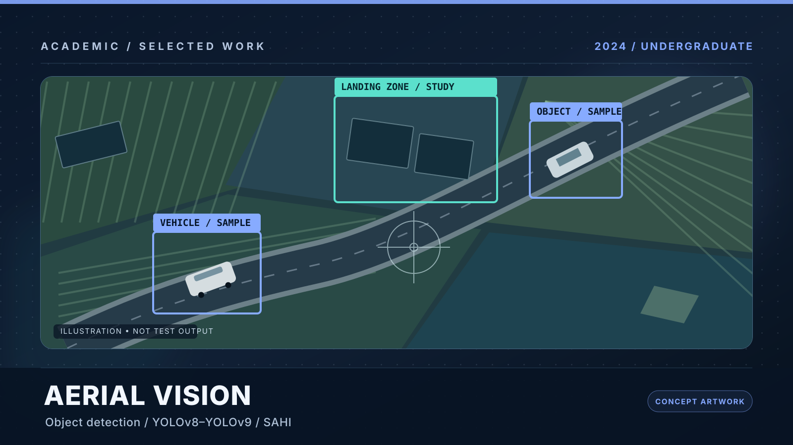
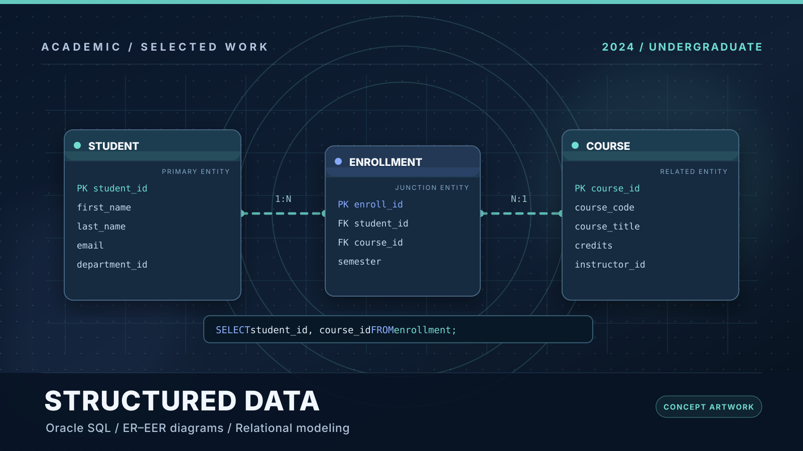
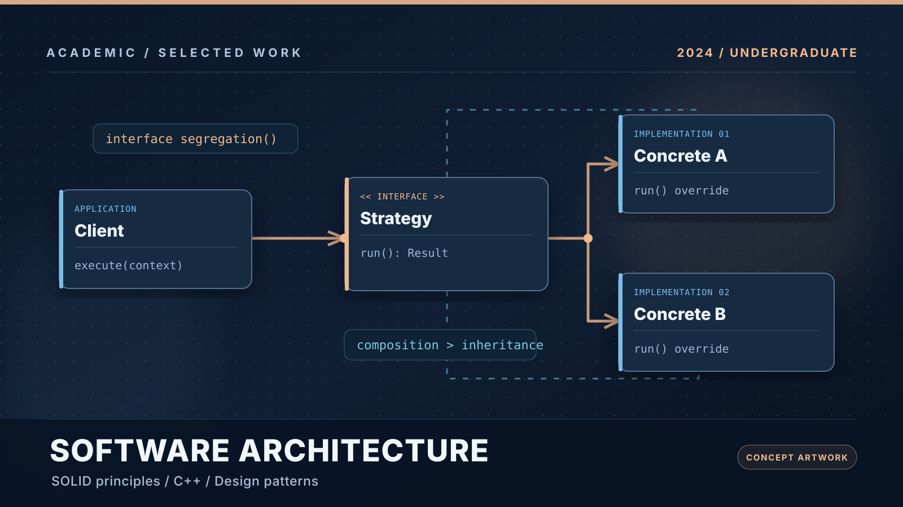
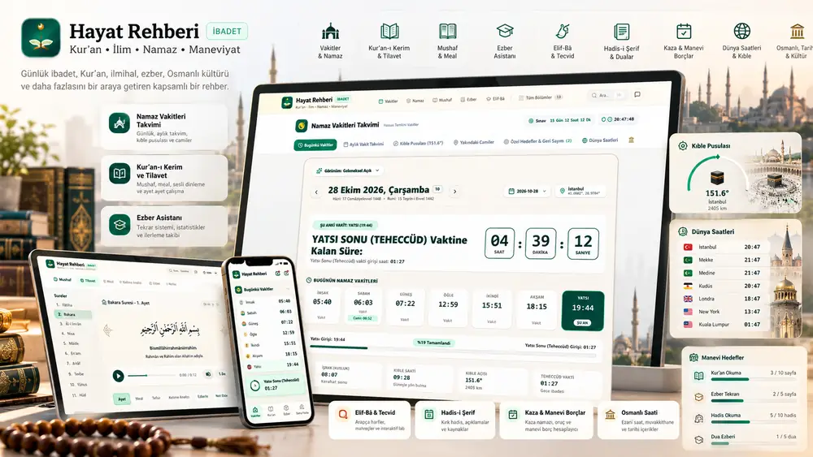
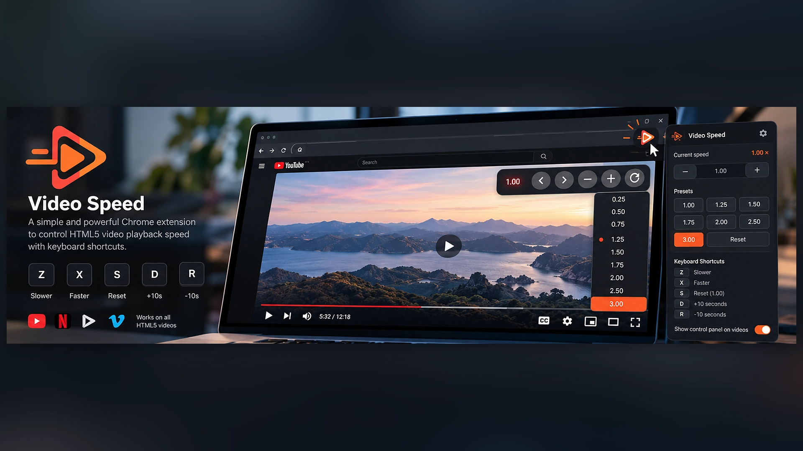
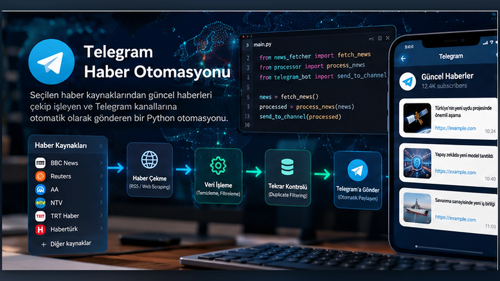
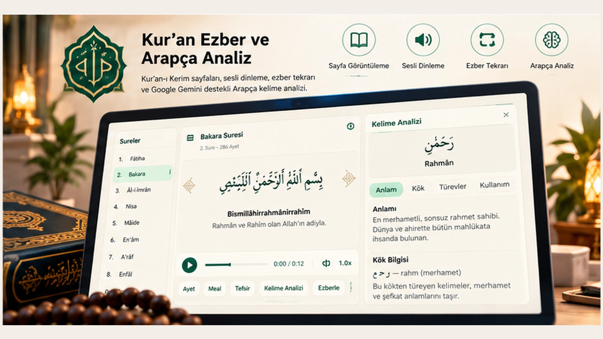

01 / 2024Academic
AI in Transportation · TEKNOFEST
SEE AI team project studying aerial detection of people, vehicles and landing zones, comparing YOLOv8/YOLOv9 and SAHI alongside research into visual positioning. Our team ranked 11th of 198 teams in the preliminary design report evaluation; this was not the final competition ranking.
YOLOv8 / YOLOv9SAHIComputer VisionResearch Report

02 / 2024Academic
SEEapp · Student Information System Database
Oracle-based relational database coursework covering a stakeholder requirements survey, ER/EER and logical diagrams, normalized data relationships, Oracle SQL implementation and example queries for academic records.
Oracle SQLER / EERRelational ModelingSQL Queries

03 / 2024Academic
Object-Oriented Design & Design Patterns
An illustrated technical study of SOLID principles, creational, structural and behavioral design patterns, their engineering trade-offs and anti-patterns, supported by original C++ examples.
C++SOLIDDesign PatternsMaintainability

04 / Web applicationSoftware
Hayat Rehberi
Designed and developed a responsive, multi-module web platform with prayer schedules, Quran reading and audio, memorization practice, progress tracking, Islamic learning resources and integrated search.
ReactTypeScriptViteTailwind CSS

05 / Browser extensionSoftware
Video Speed
Published a Chrome extension for controlling HTML5 video speed with 0.1× adjustments, keyboard shortcuts, 10-second skips, movable overlay controls and saved per-site preferences.
JavaScriptManifest V3HTML / CSSBrowser APIs

06 / Automation prototypeSoftware
Telegram News Automation
Built a Node.js and Python news aggregation prototype using web scraping, JSON persistence, duplicate checking and Telegram Bot API messaging. Includes a recorded walkthrough; requires local configuration to run.
Node.jsPythonPuppeteerTelegram Bot API

07 / Web applicationSoftware
Quran Memorization & Arabic Analysis
Interactive Quran reading and memorization with selectable Arabic text, audio repetition and speed controls, reading preferences, and optional Gemini-powered linguistic analysis.
JavaScriptES ModulesAudio APIsGemini API
08 / CODELearning repository
Python Programming Exercises
Four educational Python exercises exploring recursion, parsing, functions and text processing.
Python
09 / CODELearning repository
C Programming Exercises
An archive of 89 C exercises, string processing examples and one C++ example.
C / C++
10 / CODELearning repository
SQL Practice Resources
SQL practice examples and learning materials; a resource repository rather than a software product.
SQL
No matching projects. Try another search.